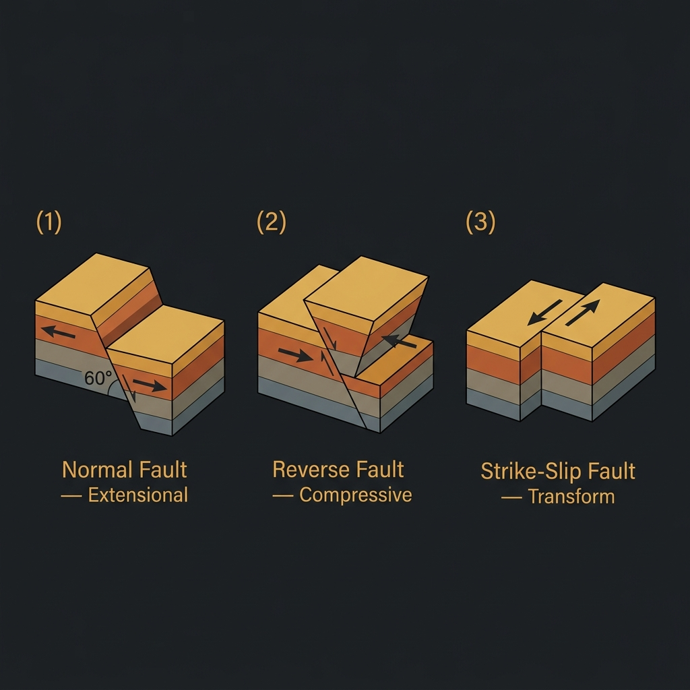

1. What Is a Fault?
Think of the Earth's crust as a three-dimensional block of layered rock. A fault is a planar surface cutting through that block at some angle — sometimes near-vertical, sometimes nearly horizontal — along which rock has moved. The key word is along: faults are not cracks that simply open up; they are surfaces of displacement, where rock on either side has slipped past or over or under rock on the other side.
Faults can be ancient, locked, and apparently dormant for tens of thousands of years, and then erupt into activity in seconds. They can be kilometres long or thousands of kilometres long. The Alpine Fault in New Zealand runs for 850 kilometres; the East Anatolian Fault in Turkey extends for 700 kilometres. By contrast, the fault that caused the 1989 Newcastle earthquake was estimated to measure only a few kilometres in length — and had never been detected before it ruptured.
The fault plane is the actual surface along which movement occurs. The angle of this surface from horizontal is its dip. Rock above the fault plane is the hanging wall; rock below is the foot wall. These terms, which sound archaic, come directly from the language of deep-shaft mining — miners who worked fault-bearing ore veins stood on the foot wall and hung their lanterns on the hanging wall.
2. The Three Fault Types

Normal faults form under extensional stress — where the crust is being pulled apart. The hanging wall slides downward relative to the foot wall along a fault plane typically inclined at 50 to 60 degrees. Normal faults are characteristic of diverging plate boundaries and rift zones. In Australia, the Eastern Highlands were partly shaped by normal faulting as the continent drifted away from Antarctica. Visually, normal faults create distinctive stepped landscapes — the raised block (horst) stands above the dropped block (graben), producing fault scarps that can be read directly in the topography long after the last earthquake.
Reverse (thrust) faults are the inverse — they form under compressive stress, where the crust is being squeezed. The hanging wall is pushed upward and over the foot wall. Low-angle reverse faults (dipping at less than 45 degrees) are specifically termed thrust faults and are responsible for building mountain ranges. The collision of the Indian subcontinent with Eurasia has produced a vast zone of thrust faulting that has elevated the Himalayas — and continues to raise them at approximately 5 millimetres per year. Critically for Australia, the compressive stress generated by the northern margin of the Indo-Australian Plate is transmitted southward into the continent's interior, making reverse and thrust faulting the dominant mechanisms of Australian intraplate seismicity. The vast majority of moderate-to-large Australian earthquakes — including Newcastle and the 1988 Tennant Creek sequence — are reverse-fault mechanisms.
Strike-slip (transcurrent) faults occur where rock masses slide horizontally past each other, with little or no vertical component. The active fault surface is typically near-vertical. If the block on the far side of the fault moves to the right relative to the observer, it is a right-lateral or dextral fault (the San Andreas, the North Anatolian Fault in Turkey). If it moves to the left, it is left-lateral or sinistral. The Alpine Fault in New Zealand's South Island is a dextral strike-slip fault — it has produced approximately 480 kilometres of lateral displacement over the past 25 million years, the geological equivalent of shuffling two stacked decks of cards apart horizontally.
3. Intraplate vs. Interplate Earthquakes
The majority of the world's seismic energy is released at or near tectonic plate boundaries — these are interplate earthquakes. They are often large because the stresses driving plate motion are continuously replenished by mantle convection. The great subduction zone events of 2004 and 2011; the 1906 San Francisco earthquake on the San Andreas transform fault; the 2023 Turkish earthquakes on the East Anatolian Fault — these are all interplate events, and they conform to the intuitive model of earthquakes as a plate boundary phenomenon.
Intraplate earthquakes are far more conceptually challenging. They occur within the rigid interior of a plate, far from any active boundary, on faults that may be entirely invisible at the surface. In Australia, the dominant hypothesis is that compressive stress from the collision at the northern plate margin is transmitted laterally across the rigid continent, reactivating ancient faults that formed under entirely different stress regimes hundreds of millions of years ago.
The geological structure beneath much of Australia is extraordinarily old — the cratons of Western Australia contain some of the oldest exposed rock on Earth, in excess of 4 billion years. These ancient terrains contain innumerable fossil faults and shear zones, many poorly characterised, that can be reactivated if the contemporary stress field aligns with their orientation. This is why Australian earthquake hazard is difficult to forecast: the seismogenic faults are often ancient, deeply buried, and revealed only by the earthquakes themselves.
4. Focal Depth and Its Consequences
Beyond fault type and plate setting, one further classification governs an earthquake's potential for destruction: focal depth. Earthquakes are divided into three broad categories.
Shallow-focus earthquakes (0–70 km) are the most destructive class. Because the rupture point is close to the surface, seismic energy has little distance over which to attenuate before reaching buildings and infrastructure. Nearly all historically destructive earthquakes fall into this category. The 22 February 2011 Christchurch earthquake was only 5 kilometres deep — an extreme case of shallow seismicity that maximised shaking intensity at the surface.
Intermediate-focus earthquakes (70–300 km) are characteristic of the upper portions of subducting slabs, where the descending oceanic plate is still cold and brittle enough to fracture. They produce significant shaking over a wide area but generally cause less concentrated surface damage than shallow events of comparable magnitude.
Deep-focus earthquakes (300–700 km) are scientifically enigmatic. At such depths, the pressure and temperature conditions should, in theory, prevent brittle fracture — rock should deform plastically rather than snap. Yet deep earthquakes do occur, and their mechanism remains an area of active research. Candidates include dehydration embrittlement (water released from descending oceanic rocks reducing effective pressure) and phase transitions in mineral crystal structure. Whatever their mechanism, deep earthquakes rarely cause major damage at the surface.
References
- Twiss, R. J., & Moores, E. M. (2007). Structural Geology (2nd ed.). W. H. Freeman.
- Sibson, R. H. (1983). Continental fault structure and the shallow earthquake source. Journal of the Geological Society, 140(5), 741–767.
- Clark, D., & McCue, K. (2003). Australian palaeoseismology: towards a better basis for seismic hazard estimation. Annals of Geophysics, 46(5).
- Kennett, B. L. N., & Iaffaldano, G. (2013). Role of lithosphere in intra-continental deformation: Central Australia. Gondwana Research, 24(3–4), 958–968.
- Green, H. W. (1994). Solving the paradox of deep earthquakes. Scientific American, 271(3), 64–71.